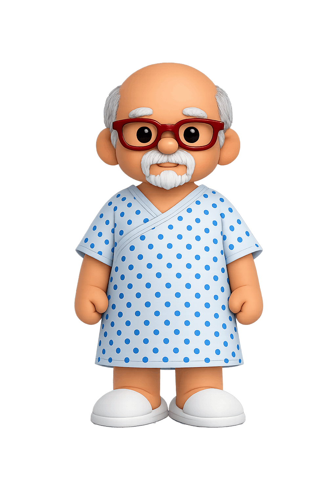
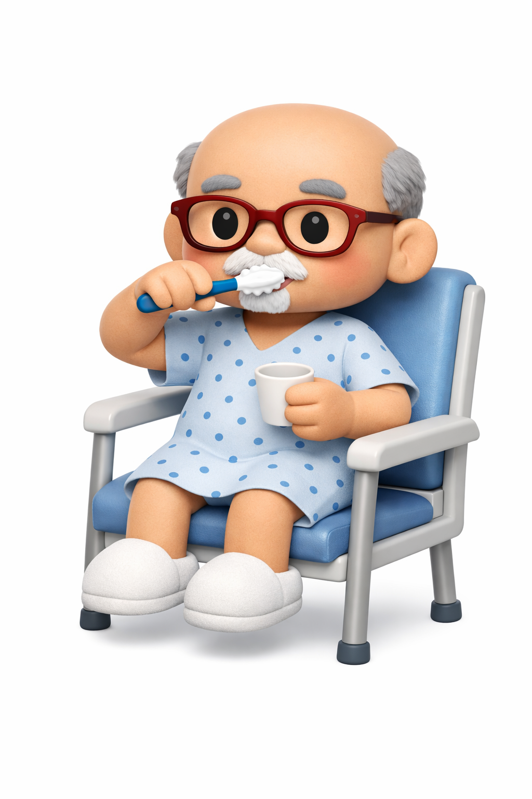

MrN'sJourney
Yilin's L1 Clinical Reasoning Documentation
An occupation-centred approach to rehabilitation guided by the Occupational Therapy Intervention Process Model
Model · OTIPM
Setting · Acute Inpatient
Patient · Mr N, Anonymised

Scroll
02 · OTIPM · The Transactional Model
OT Intervention Process Model
03 · Timeline
Mr N’s Journey
19 Nov
2025
2025
B-ALL diagnosed
30 Nov
2025
2025
SGH — chemo starts
8–12 Dec
2025
2025
MICA — septic shock
24 Dec
2025
2025
MICU — 2nd shock
1 Jan
2026
2026
Hartmann’s procedure
10 Jan
2026
2026
Step-down & OT
04 · Patient Profile

Roles
Physical
Cognitive
Psychosocial
Environment
Select a node to explore
07 · OTIPM · Cyclical Process
Select a phase
to explore
to explore
Select a phase
to explore
to explore
Select a phase
to explore
to explore
08 · Goals & GAS Outcomes
GOAL ATTAINMENT SCALES

card1.svgClick to explore →
Ring 1 · Grooming Task
Short-term Goals
Toothbrushing in sitting with minimal assistance by bedside in 2 weeks
+1
Toothbrushing, shaving & facewashing in sitting with minimal assistance in 3 weeks
+1
Long-term Goals
Toothbrushing, shaving & facewashing in standing with minimal assistance in 1 month
+1
Independent toothbrushing, shaving & facewashing by sink in standing in 2 months
+2

Click to explore →
Ring 2 · Mobility & Transfers
Short-term Goals
Sit to stand to frame with maximal assistance in 3 weeks
−2
Moderate assistance pivot transfer bed ↔ chair and in 3 weeks
+1
Long-term Goals
Mobilise within the bay with moderate assistance and appropriate aid in 2 months
+1
Mobilize independently with appropriate aid in 3 months
+1

Click to explore →
Ring 3 · Outdoor Mobility & Leisure
Short-term Goals
Walk in park at Block 4 with wife's supervision and appropriate aid in 3 weeks (wheelchair for transit)
−1
Standing bimanual tasks with minimal assistance and appropriate aid in 3 weeks
−1
Long-term Goals
Walk in nature for 30 min with rollator frame and supervision in 2 months
Ongoing
Independent nature walks with single-sided aid in 5 months
Ongoing